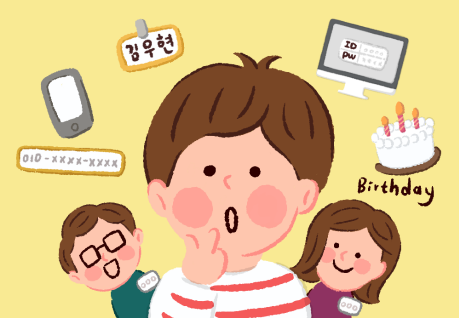
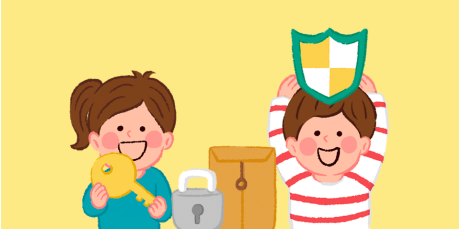
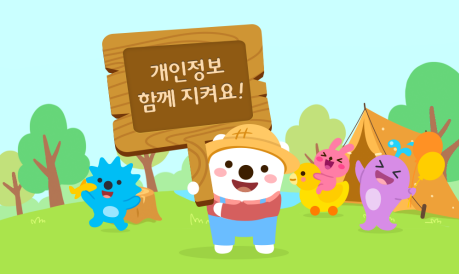

Fuku?oka?에 회원 가입을 신청하시는 분께 개인정보의 수집과 이용 목적, 개인정보 보관과 이용 기간에 대해 알려드립니다.
회원 가입을 원하시는 경우, 아래 내용을 자세히 읽고 동의해주세요.
1. 수집하는 개인정보
대부분의 Fuku?oka?는 회원 가입을 하지 않아도 이용할 수 있습니다. Fuku?oka?는 서비스 이용을 위해 반드시 필요한 개인정보만 수집합니다.
회원가입을 할때
이용자를 확인하고, 아이디를 만들기 위해 필요한 정보를 수집합니다. 아직 14살이 되지 않은 이용자(만 14세 미만 아동)의 개인정보를 수집할 때는 부모님 등 보호자(법에서 정하고 있는 대리인, 즉 법정대리인)의 동의를 받아야 하기 때문에 보호자 정보도 함께 수집합니다.

수집하는 개인정보
[필수] 아이디, 비밀번호, 이름, 생년월일, 성별, 가입 신청 확인에 이용된 휴대전화 번호
아직 14살이 되지 않은 이용자로부터 수집하는 보호자(법정대리인) 정보
보호자의 이름, 생년월일, 성별, 보호자 본인 확인에 이용되는 정보(DI), 휴대전화 번호, [선택] 이메일 주소
서비스를 이용할 때
서비스 이용 중에 개인정보가 추가로 수집될 수 있습니다. 이 경우 개인정보를 수집하기 전에 개인정보의 수집과 이용에 대해 미리 알려 드리고 동의를 받습니다.
Fuku?oka?에 접속할 때
서비스를 이용할 때 자동으로 만들어지는 정보들이 저장, 수집될 수 있습니다. 그리고 이용한 휴대전화, 컴퓨터와 같은 기기 정보 중 변경이 어려운 고유한 정보를 수집할 때는 원래의 내용을 알 수 없도록 변경하여 수집합니다.
IP주소, 쿠키, 서비스 이용 기록, 서비스 이용 기계(휴대전화, 컴퓨터 등)에 대한 정보, 위치 정보
※ IP(아이피)와 쿠키에 대한 설명
IP (아이피) 주소란?
인터넷을 이용하는 기기(휴대전화, 컴퓨터 등)의 '인터넷 주소 정보'를 말합니다.
쿠키란?
인터넷 사이트를 통해 이용자의 컴퓨터 등에 저장되는 정보를 말합니다. 쿠키는 이용자가 인터넷을 이용할 때 이전에 이용했던 인터넷 이용 환경으로 빠르게 연결할 수 있게 합니다. 또한 저장해 두었던 내용을 다시 보여 주는 등 편리한 이용을 돕는데 사용됩니다.
위치 정보를 활용하는 Fuku?oka? 서비스의 위치정보 이용 등에 대한 자세한 내용은 ‘Fuku?oka? 위치정보 이용약관’ 에서 안내해 드리고 있습니다.
2. 수집한 개인정보의 이용
수집한 개인정보는 Fuku?oka?의 아래의 목적으로만 이용합니다.

회원 관리를 위해
이용자가 직접 회원 가입 또는 탈퇴를 신청한 것이 맞는지 확인, 이용자 나이 확인, 아동 이용자의 보호자(법정대리인) 동의 확인, 이용자 또는 보호자(법정대리인)가 맞는지 확인, 이용자 구분 등이 필요한 경우 개인정보를 이용합니다.
새로운 서비스 개발과 향상을 위해
원래의 서비스(광고 포함)를 제공하기 위해서도 이용하지만, Fuku?oka? 서비스를 더 편리하고 좋게 만드는데 개인정보를 이용합니다. 얼마나 많은 사람들이 어떻게 Fuku?oka? 서비스를 이용하고 있는지 살펴보거나, 서비스 방문과 이용 기록을 살펴보고 해석하기 위해서도 개인정보를 이용합니다. 그리고 개인정보나 관심 등에 따라 이용자들끼리 소통할 수 있도록 연결해주거나, 아는 사람 또는 관심 거리 등에 따라 이용자가 좋아할만한 맞춤 서비스를 제공하는 등 새로운 서비스를 개발하는데 개인정보를 이용합니다.
이용자 보호와 서비스 운영을 위해
법이나 Fuku?oka? 이용 약관을 어기거나 옳지 못한 방법으로 서비스를 이용하고 운영에 피해를 주는 행동을 못하게 하는데 이용합니다. 그리고 다른 사람의 Fuku?oka? 계정 정보(아이디, 비밀번호 등)를 몰래 이용하거나 사고 파는 행동 등을 못하게 하기 위해 개인정보를 이용합니다. 약관 내용의 수정 등 서비스에 대해 이용자가 알아야 할 중요한 내용을 알려드립니다. 그리고 다툼 해결을 위해 기록을 보관하거나 이용자가 요청한 내용을 해결하거나 대답하는 등의 과정에서 개인정보를 이용합니다.
서비스를 제공하고 이용을 돕기 위해
요금 지불이 필요한 서비스 제공 시 본인 확인, 구매와 요금 결제 진행, 이용자가 구매한 물건을 배달하고 구입한 유료 서비스 제공하기 위해 개인정보를 이용합니다.
이벤트 정보와 참여 기회를 알려드리고, 이용자가 더 좋아할 수 있는 서비스나 정보(광고 포함) 등을 알려드리고 추천하는데 개인정보를 이용합니다.
안전한 이용 환경을 만들기 위해
이용자가 안심하고 서비스를 이용할 수 있는 안전한 인터넷 이용 환경을 만들기 위해 개인정보를 이용합니다. 개인의 비밀과 사생활을 보호하거나 위험이 생기지 않도록 보호하는데 개인정보를 이용합니다.
3. 개인정보의 파기(삭제)
이용자의 개인정보는 회원 탈퇴 시 빠르게 삭제합니다. 그러나 아래와 같이 이용자에게 따로 동의를 받는 경우에는 동의 받은 기간 동안 안전하게 보관하였다가 삭제합니다. 그리고 법에서 보관 기간을 정해두고 있는 경우에도 해당 기간 동안 개인정보를 안전하게 보관하였다가 삭제합니다.
다른 이용자 보호와 안전한 서비스 이용을 위한 경우
옳지 못한 방법으로 서비스를 이용하는 것을 막기 위해 일정 기간 동안 개인정보를 보관하였다가 삭제합니다.
회원 가입, 서비스 이용 관련 정보 (6개월 보관)
옳지 못한 방법으로 가입하거나 징계를 받은 경우, 가입 확인 시 이용된 휴대전화 번호(아직 14살이 안된 이용자의 경우 보호자 본인 확인에 이용되는 정보인 DI)를 보관
탈퇴 회원 관련 정보 (6개월 보관)
서비스를 옳지 않게 이용한 것에 대한 처벌과 책임을 피하기 위해 Fuku?oka?로부터 징계를 받기 전에 회원 가입과 탈퇴를 반복하지 못하도록 탈퇴한 이용자의 휴대전화 번호를 원래의 값을 알 수 없도록 처리하여 보관
법에서 정하고 있는 경우
법에서 정해둔 기간에 따라 보관하는 개인정보는 아래와 같습니다. 다른 이유로는 절대 이용하지 않으며 보관해야 하는 기간이 지나면 빠르게 삭제합니다.
"관련법"
전자상거래 등에서 소비자 보호에 관한 법률
계약 또는 청약철회 등에 관한 기록 (5년)
: 계약을 하거나 계약을 취소했던 기록 등
대금결제 및 재화 등의 공급에 관한 기록 (5년)
: 비용을 지불하거나 판매 물건 등을 제공했던 기록 등
소비자의 불만 또는 분쟁 처리에 관한 기록 (3년)
: 이용자의 문의나 요청, 다툼 해결에 관한 기록 등
전자금융거래법
전자금융에 관한 기록 (5년)
: 인터넷을 이용하여 돈을 주고 받은 기록 등
통신비밀보호법
로그인 기록 (3개월)
: 서비스에 방문하여 아이디와 비밀번호를 입력한 기록 등
